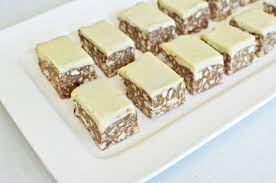

אופן ההכנה
-מניחים בקערה קוביות שוקולד מריר וחצי מיכל שמנת מתוקה וממיסים במיקרוגל. מערבבים עד לקבלת תערובת חלקה.
-מוסיפים לקערה את פירורי הביסקוויטים ומערבבים היטב עד שכל הפירורים מכוסים בצורה אחידה בתערובת השוקולד.
-יוצקים את התערובת לתבנית אינגליש קייק ומהדקים היטב לתחתית. מכניסים למקפיא עד להכנת הציפוי.
–לציפוי: מניחים בקערה קוביות שוקולד לבן ו3 כפות שמנת המתוקה וממיסים במיקרוגל. מערבבים עד לקבלת תערובת חלקה.
-יוצקים על העוגה בצורה אחידה, מכסים ומכניסים למקפיא ל-4 שעות לפחות.
-מוציאים מהמקפיא, מחלצים מהתבנית (ניתן לחתוך את התבנית אם היא חד”פ), מניחים על משטח חיתוך ובעזרת סכין ארוכה חותכים לרוחב ואז לאורך לקוביות בגודל כ 2.5 ס”מ.
*שומרים בקופסה סגורה במקפיא.

זמן הכנה 10 דקות | מס' מנות 18 - 20 מנות |
סוג חלבי
רכיבים
תבנית אינגליש קייק חד פעמית
200 גרם ביסקוויטים מסוג “פתי בר” מפוררים דק (*לרגישים לגלוטן ניתן להשתמש בביסקוויטים ללא גלוטן)
65 גרם שוקולד מריר
חצי מיכל שמנת מתוקה
לציפוי : 100 גרם שוקולד לבן + 3 כפות שמנת מתוקה
אופן ההכנה
-מקציפים בקערה שמנת מתוקה עם סוכר במשך כחצי דקה (טיפ להקצפה מוצלחת: מומלץ להכניס את השמנת למקפיא 10 דקות לפני ההקצפה). מוסיפים חלב ואינסטנט פודינג וניל וממשיכים להקציף עד לקבלת קצפת יציבה. מוסיפים את הגבינה ומערבבים בעזרת כף בתנועות קיפול.
-מערבבים בקערית נפרדת 3 כפות ריבת חלב עם 2 כפות חלב עד לתערובת נוזלית.
–הרכבת המנה:
מניחים בתחתית כל כוס כמות של כף מפירורי הביסקוויטים.
מעל- מזליפים מתערובת קרם הגבינה (ניתן להשתמש בשקית זילוף או בשקית אוכל רגילה ולגזור את הפינה).
מעל- שמים כפית מתערובת ריבת החלב.
מעל – מזליפים מתערובת קרם הגבינה.
מעל – שמים כפית מתערובת ריבת החלב.
-מכסים או עוטפים בניילון נצמד ומכניסים למקרר כ-3 שעות לפחות לפני ההגשה.
זמן הכנה 10 דקות | מס' מנות - 5-6 כוסות |
סוג חלבי
רכיבים
5-6 ביסקוויטים מסוג “פתי בר” מפוררים
מיכל שמנת מתוקה (250 מ”ל)
כף גדושה סוכר
רבע כוס (60 מ”ל) חלב קר
3 כפות אבקת אינסטנט פודינג וניל
3 כפות גבינה לבנה
3 כפות ריבת חלב + 2 כפות חלב
אופן ההכנה
הכנת ג’לי תותים:
מכינים את הג’לי לפי הוראות ההכנה (שופכים תוכן שקית ג’לי אחת לקערה, מוזגים לתוכה 2 כוסות מים רותחים ומערבבים עד לתערובת חלקה). מניחים לתערובת כמה דקות להתקרר.
ממלאים כל כוס בתותים חתוכים (כשליש מגובה הכוס), יוצקים מעל את תערובת הג’לי (כשהיא חמימה אבל לא חמה מאוד) ומכניסים למקרר עד שהתערובת מתייצבת והופכת לג’לי.
הכנת קרם גבינה:
-מקציפים את השמנת המתוקה במשך כ20 שניות. מוסיפים סוכר, חלב, פודינג וניל וממשיכים להקציף עד לקבלת קצפת יציבה. מוסיפים גבינה לבנה וגרידת לימון ומערבבים בעדינות בתנועות קיפול (שומרים את התערובת במקרר עד שהג’לי מתייצב).
-יוצקים את קרם הגבינה מעל תערובת הג’לי.
-עוטפים בניילון נצמד ושומרים במקרר.
*לגרסת פרווה– במקום קרם גבינה ניתן להכין קרם וניל – להקציף מיכל קצפת צמחית (250 מ”ל) עם 3 כפות מלאות אינסטנט פודינג וניל ורבע כוס חלב סויה/חלב קוקוס.
זמן הכנה 10 דקות | מס' מנות 6 כוסות גדולות|
סוג חלבי
רכיבים
2 חבילות אבקה להכנת ג’לי בטעם תותים (סה”כ 170 גרם)
2 כוסות תותים חתוכים גס (כ-180 גרם)
לקרם הגבינה:
מיכל שמנת מתוקה (250 מ”ל)
רבע כוס חלב קר
2 כפות גדושות סוכר
3 כפות מלאות אבקת אינסטנט פודינג וניל
חצי כפית גרידת לימון (לא חובה)
3 כפות גדושות גבינה לבנה